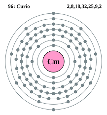

|
|
||
|
CURIO El curio es un elemento sintético de la tabla periódica cuyo símbolo es Cm y su número atómico es 96. Se produce bombardeando plutonio con partículas alfa (iones de helio). Elemento químico, Cm, de la serie de los actínidos, con número atómico de 96. El curio no existe en el ambiente terrestre, pero puede producirse en forma artificial. Sus propiedades químicas se parecen tanto a las de las tierras raras típicas que, si no fuera por su radiactividad, podría con facilidad confundirse fácilmente con uno de estos elementos. El curio es generalmente un peligro para la salud solamente si entra en el cuerpo; sin embargo, hay un pequeño riesgo externo asociado con ciertos isótopos, por ejemplo curio 243, curio 245, y curio 247. Las principales formas de exposición son la ingestión de comida y agua que contiene curio y la inhalación de polvo contaminado con curio. |
 |
DATOS Número Atómico: 96 Peso Atómico: 247.0709 Electronegatividad: 1.3 Configuración Electrónica:[Rn]5f76d17s2 Estados de Oxidación: +3,+4 No. de Electrones de Valencia: --- |